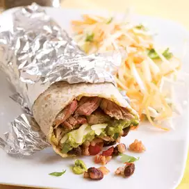

Steak Burrito

Healthy Steak Burrito with rice, cheese, guacamole, and salsa
Ingredients
- 1/2 cup prepared fresh salsa
- 1/2 cup water
- 1/4 cup instant brown rice
- 1 15-ounce can black beans, preferably low-sodium, rinsed
- 12 ounces strip steak, trimmed and thinly sliced crosswise
- 1/4 teaspoon freshly ground pepper
- 1 tablespoon canola oil
- 4 8-inch tortillas, preferably whole-wheat
- 1/2 cup shredded sharp Cheddar cheese
- 1/4 cup prepared guacamole
- 2 tablespoons coarsely chopped fresh cilantro
Steps
- Combine salsa and water in a small saucepan; bring to a boil.
- Stir in rice, reduce heat to a simmer, cover and cook for 5 minutes.
- Stir in beans, return to a simmer and cook, uncovered, stirring occasionally,until the rice is tender and most of the liquid is absorbed, about 5 minutes more.
- Meanwhile, sprinkle steak with pepper. Heat oil in a large skillet over medium-high heat
- Add steak and cook, stirring occasionally, until browned and cooked through, 3 to 5 minutes.
- To assemble, divide the steak among the tortillas and top with equal amounts of cheese, guacamole, cilantro and the rice mixture. Roll each tortilla up into a burrito.